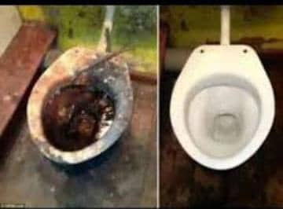
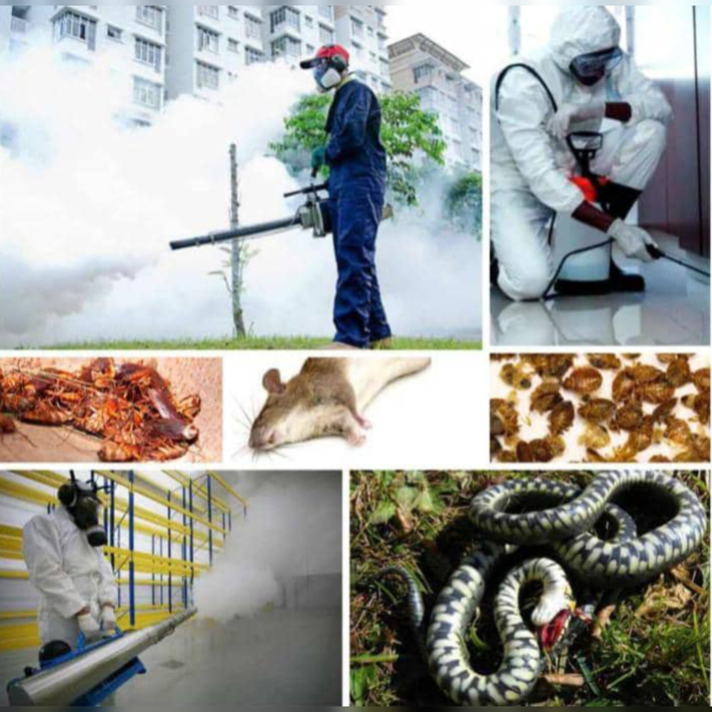
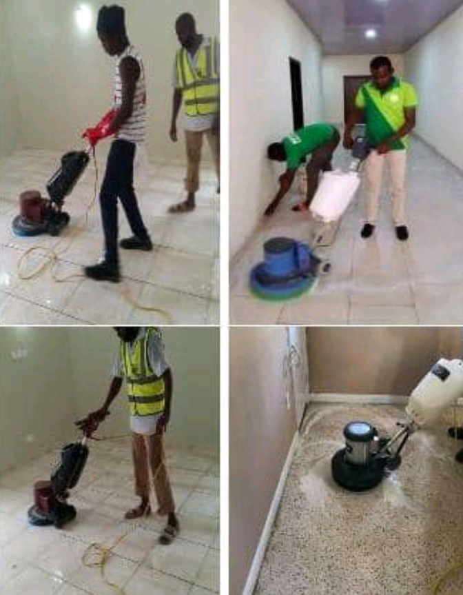
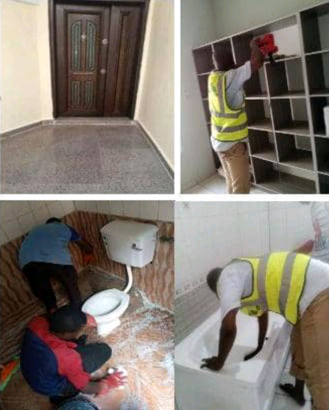
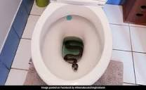
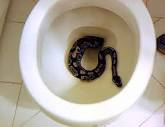

deep toilet cleaning
we are here to stopped pest from attacking you
tiles washing & scrubbing
general house cleaning
effect of leaving bathroom without cleaning
Bathrooms are humid environments, and if they are not cleaned, mold and mildew problems may occur. Not only does this affect hygiene, it can also cause damage to walls, tiles and sealing materials. 4. Plumbing Problems: Failure to clean bathroom drains and sinks regularly can lead to clogged pipes.
 what do if a snake is in your bathroom ?
immediately if snake are found in bathroom, it is essential to contact pest control speciallist immediatelythe advantage of house cleaning
Cleaning and disinfecting your home are effective ways to prevent the spread of disease and illness. Maintaining safe cleaning habits helps remove most germs, such as harmful viruses or bacteria, on houseadvantage of fumigation services in house
Fumigation can destroy all targeted pests overnight. Fumigation kills all stages of life. When fumigation is used to control a pest issue, you don't have to worry about eggs being missed, and another infestation rearing its ugly head a few months down the road.advantage of fumigation services in hospital
Advantages of Fumigation Treatments in our hospital First and foremost, fumigation treatments are extremely effective. The gases used are able to reach areas that other disinfection methods simply cannot, such as cracks, crevices, and higher surfaces, ensuring that everything is properly disinfected.advantage of fumigation services for our industries
Fumigation that eradicates pests or insects in warehouses, cargo, containers, or silos can reduce the risk of decreasing the value of the commodities stored in them. The commodity storage period will also be longer after fumigation.dont worry Abdulco Cleaning & Fumigation services are ready to do it all for you
Abdulco Cleaning & Fumigation Services..., No E23 Alhamsad Tower, opposite Ado Bayero Mall, Kano., 08144466665, 08141945090.
send us message via emailcontact us on